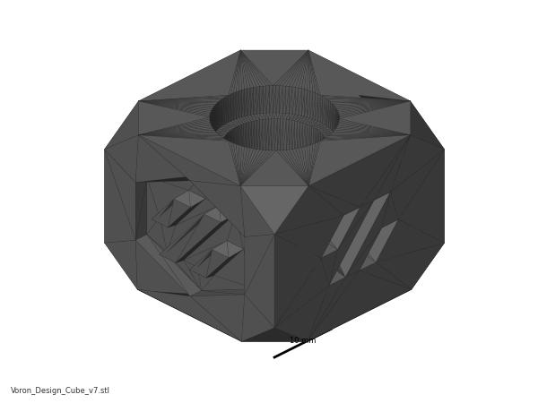
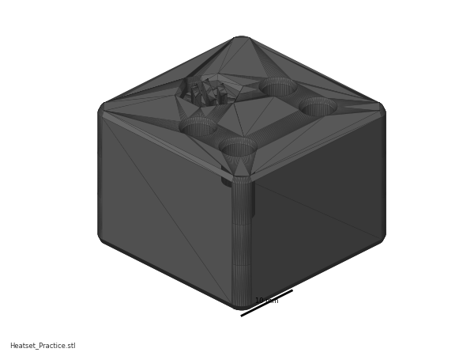
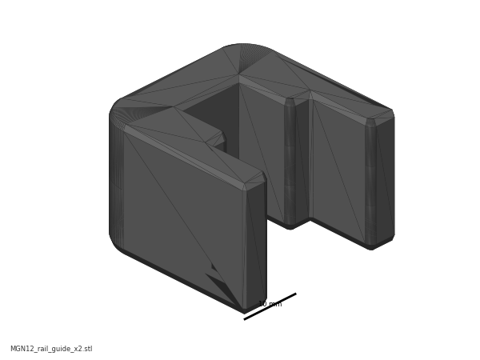
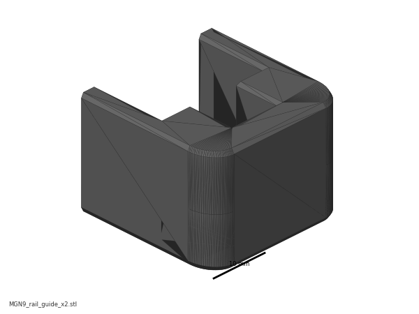
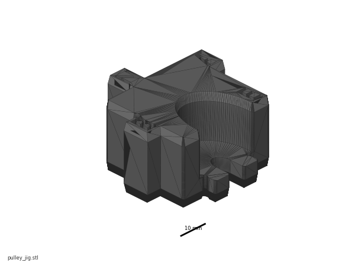
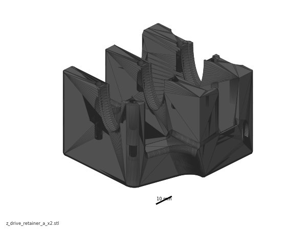

Before you start Chapter 00¶
Before you start · Chapter 00 — Before you start
Inventories the kit against its own batch BOM, settles the tools and consumables, verifies the flat reference, teaches heat-set inserts, and cleans and greases all seven rails — so that Ch 01 can start the moment the frame extrusions come out of the box and no later chapter stops for a missing tool.
What you're building in this chapter: nothing yet — this chapter builds the conditions for everything else. Four things come out of it. A counted kit: every box checked against your own batch's bill of materials, so a shortage is a Fabreeko email today rather than a stalled evening in six weeks. A working bench: the tools bought, the consumables ordered, and a flat reference surface verified with a straightedge and feeler gauges, because the frame's squareness in Ch 01 can be no better than the surface it is built on. A heat-set technique: the brass tip fitted to the soldering iron and an iron temperature found on a scrap coupon, ready for the ~150 brass inserts that give printed parts their metal threads. Seven prepared linear rails — the hardened steel bars and ball-bearing carriages that carry the toolhead, the gantry and the gantry's four corners — degreased of their shipping oil, packed with grease, wiped and labelled. Rails can only be greased before they are bolted down, which is why they are done here and not in the chapters that use them. Roughly half of this chapter happens weeks before the cartons arrive — the two headings Before the kit ships and Kit day below say which steps belong to which day; the step numbers stay in bench order.
Time: 2.5–4.0 h hands-on, first build (survey §5.1 P00). Rail prep is roughly half of it.
Sessions: 7 × ~30 min — the Pause: lines below break the chapter into 7 segments; every minute figure is a first-build estimate.
Prerequisites:
- Print batch B00 — Calibration & jigs (print/B00-calibration-and-jigs.md). B00 prints the day the Core One+ runs, months before the Voron kit lands, and its gate is in two parts. Gate A (the cube, Step B00.5) is long passed by kit day — it released the pre-kit batches B02 and B07, and B08–B10 after the Gen 2 upgrade. Gate B — the 625-2RS bearing in the
z_drive_retainer_abore, theMGN12_rail_guideon the real rail, and all seven inserts in theHeatset_Practicecoupon — is Step B00.7 and runs the morning the kit lands, before the inventory; it releases B01 (which goes on the Prusa before Step 00.2) and B03–B06. Steps 00.13–00.16 are its insert item. This chapter needs theHeatset_Practicecoupon and both rail-guide sizes off that plate; nothing else from B00. - The kit itself, unopened — for the Kit day steps only. Fabreeko order F6424626, pre-order, ETA mid/late September 2026.
- Nothing else. This chapter has no assembly prerequisites — it is the first thing you do.
Tools
- Digital caliper, 150 mm
- Machinist square, 150 mm, DIN 875/2 or better
- Flat reference surface (the kitchen stone counter, verified in Step 00.10)
- Steel rule / straightedge ≥ 600 mm
- Feeler gauge set
- Temperature-controlled soldering iron that accepts 900M-T tips (Hakko FX888D-style sleeve with a thumb ring) — the LDO brass insert tip in the kit will not fit anything else. src
- LDO brass M3 heat-set tip (supplied in the kit)
- Hex drivers 1.5 / 2 / 2.5 / 3 / 4 mm — kit wrenches or the Fabreeko precision set
- Flush cutters
- 10 ml syringe with a blunt tip (grease delivery), or use the grease tube nozzle
- 2 mm drill bit (supplied), 2.5 mm slot screwdriver (supplied)
- Clean towel, for drying the rails after the IPA soak
Consumables: IPA ≥ 90% (enough to cover a 400 mm rail inside its own shipping bag, seven times over); Super Lube 21030 synthetic grease; nitrile gloves; lint-free cloth; masking tape (labels, and the rail end stops); permanent marker.
Printed parts — batch B00, all Galaxy Black ASA on the Core One+
Parts arrive in the bins named below (see the bin map in print/README.md#bins); check the bin label's list before you start.
| Looks like | STL | Bin | Repo path | Qty | Colour |
|---|---|---|---|---|---|
 |
Voron_Design_Cube_v7.stl |
00-jigs | Voron-2 STLs/Test_Prints/ |
1 | Black |
 |
Heatset_Practice.stl |
00-jigs | Voron-2 STLs/Test_Prints/ |
1 | Black |
 |
MGN12_rail_guide_x2.stl |
00-jigs | Voron-2 STLs/Tools/ |
2 | Black |
 |
MGN9_rail_guide_x2.stl |
00-jigs | Voron-2 STLs/Tools/ |
2 | Black |
 |
pulley_jig.stl |
00-jigs | Voron-2 STLs/Tools/ |
1 | Black |
 |
z_drive_retainer_a_x2.stl |
02-Z0 | Voron-2 STLs/Z_Drive/ |
1 | Black |
{kind=link}
{kind=link}
{kind=link}
{kind=link}
{kind=link}
{kind=link}
z_drive_retainer_a is on the jig plate as the bearing press-fit coupon — Gate B's bore test, Step B00.7 — and it is a real part you will fit in Ch 02; nothing is wasted.
Hardware (chapter totals)
| Fastener / part | Qty | Note |
|---|---|---|
Heat-set insert, brass, M3×5×4 — M3 thread, ~4 mm OD × 5 mm long — the STL pockets are 5.0 mm deep with a ~4 mm bore and the LDO tip tongue is 5.0 mm (verify against the bag) |
7 | practice coupon only (the coupon STL has 7 pockets) — this is Gate B's insert item, Step B00.7. Kit inserts (146 of the 153 remain for the build), or the ten ordered with the filament (Step 00.9) |
| — no other kit hardware is consumed in this chapter — | 0 | every rail, fastener and PCB goes back in its bag |
Read first
- The rails ship dry and must be cleaned and packed before they go on an extrusion. The flip-and-pack method needs access to the back of the rail. Once a rail is bolted to a 2020 you cannot do this (survey §5.2 W9). src
- A rail carriage will slide off its rail and spill its bearing balls, and dropping one ruins it. Tape every carriage in place the moment you unbag a rail — the MGN12 comes out first, at Gate B (Step B00.7), so tape it there — and fit the two end-stop bands before the soak (Step 00.17; manual p.24, p.26).
- Heat-set inserts go in per print batch, before the part enters any assembly. One missed insert in an XY joint costs a gantry teardown (survey §5.2 W3).
- Caliper the deck panel during inventory. LDO's guides say 4 mm, LDO's own BOM says 3 mm. This decides which
deck_support_*you print, and it is a Ch 02 step, not a Ch 11 one (survey §4.3). - Post the two Discord questions on day one (Step 00.32). Both have multi-day answer latency and both gate work in Ch 08–Ch 10.
Sources for this chapter:
- LDO batch BOM index — find your batch tile from the kit serial
- LDO 350 Rev D BOM — the inventory checklist and every count in this chapter
- LDO printed parts guide (Rev D) — which parts LDO supplies printed
- LDO Nitehawk-SB V2 board doc — the Rev D+ toolboard identification markers
- LDO XY endstop cable guide — the mislabelled XY endstop cable batch
- LDO rail grease guide — degrease, flip-and-pack, wipe
- LDO heat-set insert tool guide — tongue adjustment, temperature technique, the 90 %/10 % trick
- LDO Klipper config
leviathan-printer-rev-d-sbv2.cfg— thestm32g0b1xxserial-ID check written into Ch 12 - Voron 2.4r2 assembly manual (pinned
de7e89d) pages 4–11, 24–26, 31 — print spec, filenames, fastener names, drivers, blind joints, exploded-view conventions, rail handling, inserts - Voron-2
STLs/Toolsand Voron-2STLs/Test_Prints— the B00 jigs and the practice coupon - survey §4.1, §4.3, §5.2, §7.4, §7.5 · print plan §1.2, §1.4
- Mirrored images in this chapter are LDO Motors' (the heat-set and rail-grease guides on docs.ldomotors.com, and the Nitehawk-SB-V2 repo), used with attribution; see
assets/remote/00-before-you-start/SOURCES.txt. Every step keeps the original URL on itsSource:line.
Video coverage (Steve Builds, pre-release LDO kit — differs from Rev D+): Part 1 @0:02:04 (+11m), Part 1 @0:12:11 (+8m), Part 1 @0:50:02 (+6m), Part 1 @1:54:10 (+39m), Part 1 @2:05:13 (+19m), Part 1 @2:32:52 (+32m), Part 1 @3:11:45 (+10m)
This manual also links timestamps from Steve Builds' eleven-part LDO Voron 2.4 Kit Build playlist — livestreams in which he assembles the pre-release "feedback" kit LDO shipped him in December 2021–January 2022 to review before the kit went on sale, the closest thing to a full video walkthrough of this machine. It is not this kit: Steve's build is Afterburner + Clockwork 1 on a BTT Octopus with a separate Raspberry Pi and a Euclid probe, where this build is Stealthburner + Clockwork 2 + Revo HF on a Nitehawk-SB V2 toolboard, a Leviathan carrying the Pi, an Omron inductive probe plus the LDO nozzle probe, and a Clicky-Clack door instead of the stock doors. Every step link that lands on a step where this matters carries a (differs: …) note; low-confidence links (the video's segment start rather than the exact moment) are collected instead in each chapter's Video coverage line, above. Links and timestamps only — no stills, clips, thumbnails, or transcript excerpts (assets/video/SOURCES.txt).